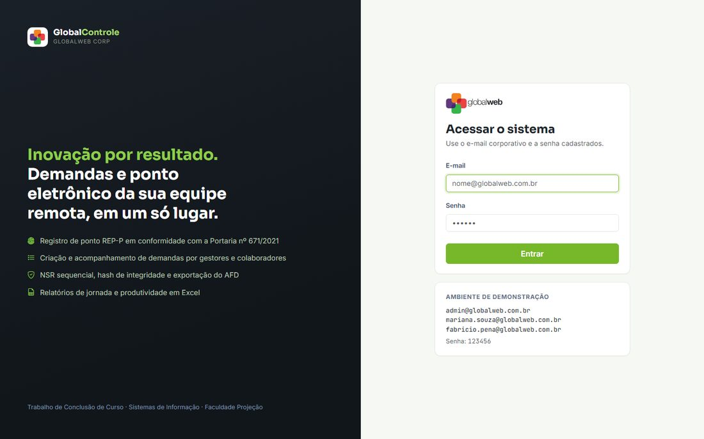
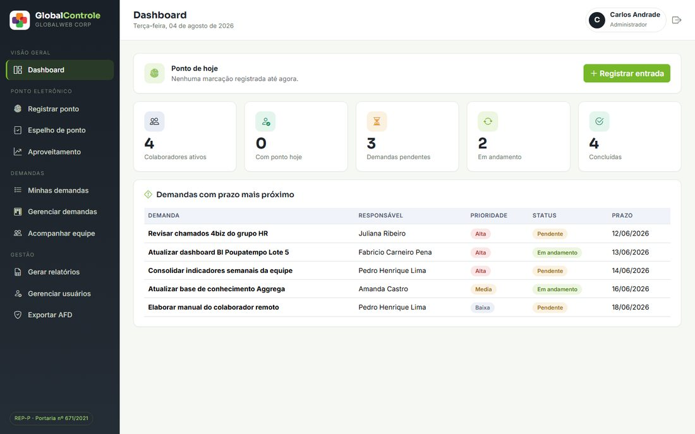
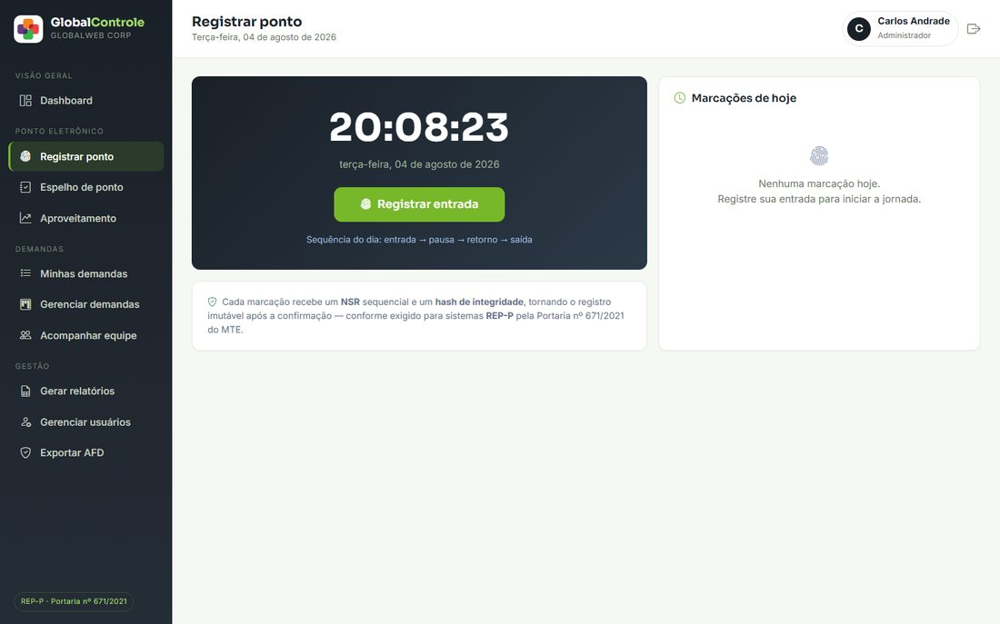
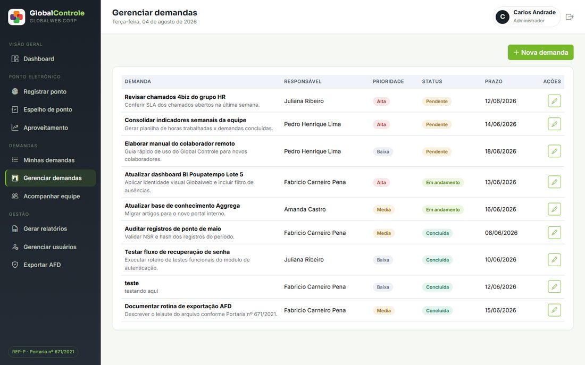

Inovação por resultado. Demandas e ponto eletrônico da sua equipe remota, em um só lugar.
Sistema web full stack que desenvolvi como TCC para a Globalweb Corp (empresa fictícia criada como cenário do projeto): integra controle de ponto eletrônico REP-P — em conformidade com a Portaria nº 671/2021 do MTE — com gestão de demandas de equipes remotas, unificando dois sistemas que normalmente ficam espalhados em planilhas e ferramentas soltas num único painel, com regras de negócio, papéis de acesso e auditoria implementados do zero.
Capturas reais do sistema rodando localmente com a base de demonstração (dados fictícios).




O núcleo técnico do TCC: um registro de ponto eletrônico que segue de fato as regras da legislação trabalhista para pontos por programa, não só a interface.
Número Sequencial de Registro gerado automaticamente por colaborador a cada marcação.
Cada marcação de ponto recebe um hash de integridade, tornando o registro imutável (RN003).
Fluxo entrada → pausa → retorno → saída validado no backend a cada marcação (RN002).
Consulta do histórico de marcações disponível ao próprio trabalhador (UC005).
Arquivo Fonte de Dados com cabeçalho, marcações e trailer nos formatos exigidos (UC006).
Cruza % de jornada cumprida com % de demandas concluídas no prazo (RN009).
O segundo pilar do sistema — pensado para times distribuídos que precisam de visibilidade sobre o que cada pessoa está fazendo.
Colaboradores criam e editam demandas próprias; gestores têm gestão completa, com reatribuição e mudança de status (RN005).
Gestores e admins visualizam o desempenho e a produtividade de toda a equipe em um painel único.
Geração de relatórios de jornada e produtividade via openpyxl, prontos para download.
Quatro perfis (colaborador, gestor, gestora e administrador) com permissões distintas em cada rota.
11 telas documentadas no Capítulo VI do TCC, cada uma com seu perfil de acesso.
| Tela | Rota | Perfil |
|---|---|---|
| 01 — Login | /login | todos |
| 02 — Dashboard | / | todos |
| 03 — Registro de Ponto | /ponto | todos |
| 04 — Espelho de Ponto | /espelho | todos |
| 05 — Acompanhar Demandas | /demandas | colaborador |
| 06 — Gerenciar Demandas | /gerenciar-demandas | gestor/admin |
| 07 — Acompanhar Equipe | /equipe | gestor/admin |
| 08 — Gerar Relatórios | /relatorios | gestor/admin |
| 09 — Gerenciar Usuários | /usuarios | admin |
| 10 — Exportar AFD | /exportar-afd | admin |
| 11 — Controle de Home Office | /aproveitamento | todos (gestor/admin veem a equipe) |
Aplicação server-side clássica — sem frameworks front-end, todo o backend e as regras de negócio escritos por mim.
É uma aplicação Flask com backend real (login, sessão e banco de dados) — não roda como página estática. Para testar, clone o repositório e rode localmente:
# dentro de TCC/global_controle python -m pip install -r requirements.txt python app.py # acesse http://localhost:5000